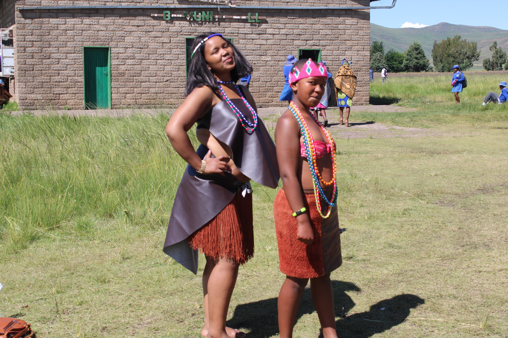
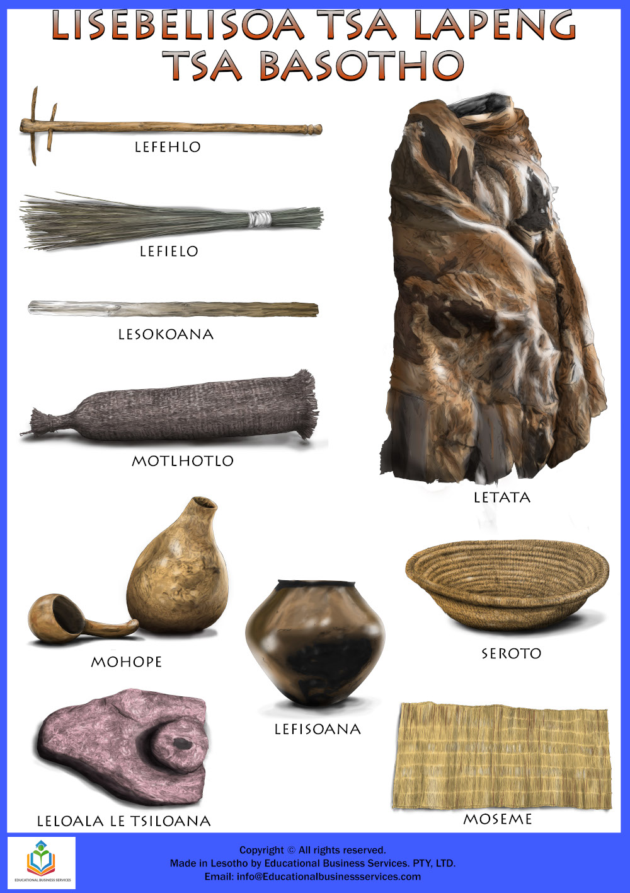
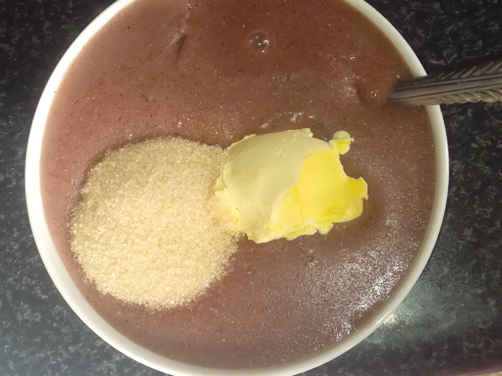
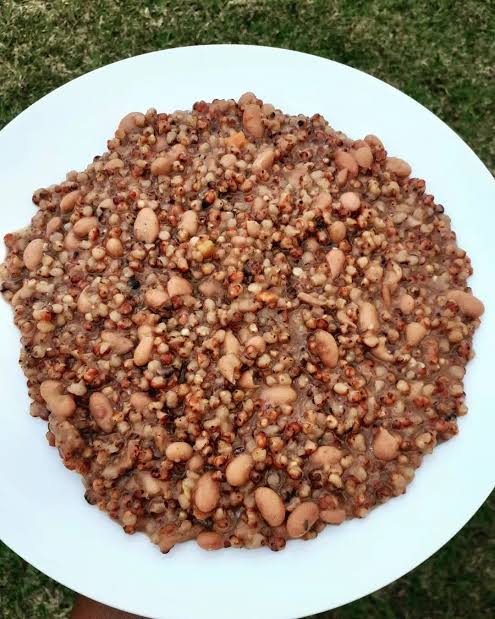
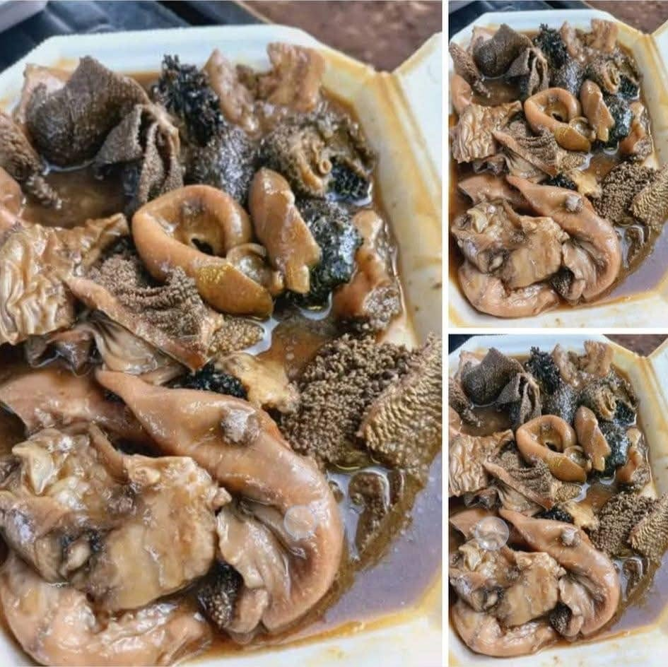

Basotho Food, Culture, and Heritage
Explore the flavours, traditions, and history of Lesotho through our gallery. The photos showcase Basotho life and the landscapes of the Mountain Kingdom.

One of Basotho's best Attire
Basotho blankets worn for warmth and cultural expression

Basotho traditional products
Basotho dishes
Discover traditional foods enjoyed in Lesotho. Recipes and ingredients may vary between households and regions.

1. Papa le moroho
Maize meal served with cooked leafy greens, often prepared with onion or tomato.

2. Motoho
Fermented sorghum porridge, enjoyed as a nourishing meal or traditional drink.

3. Nyekoe
A hearty dish made with beans and sorghum, sometimes prepared with wheat or peas.

4. Likahare
Cleaned and cooked animal intestines, traditionally prepared and served with papa.
Culture and daily life
See Basotho clothing, blankets, music, dance, crafts, and community celebrations. The mokorotlo, a traditional Basotho hat, is a well-known symbol of Lesotho.
Heritage and history
Explore historic sites, cultural landmarks, and places connected to Lesotho’s past. These images celebrate the stories and traditions passed down through generations.